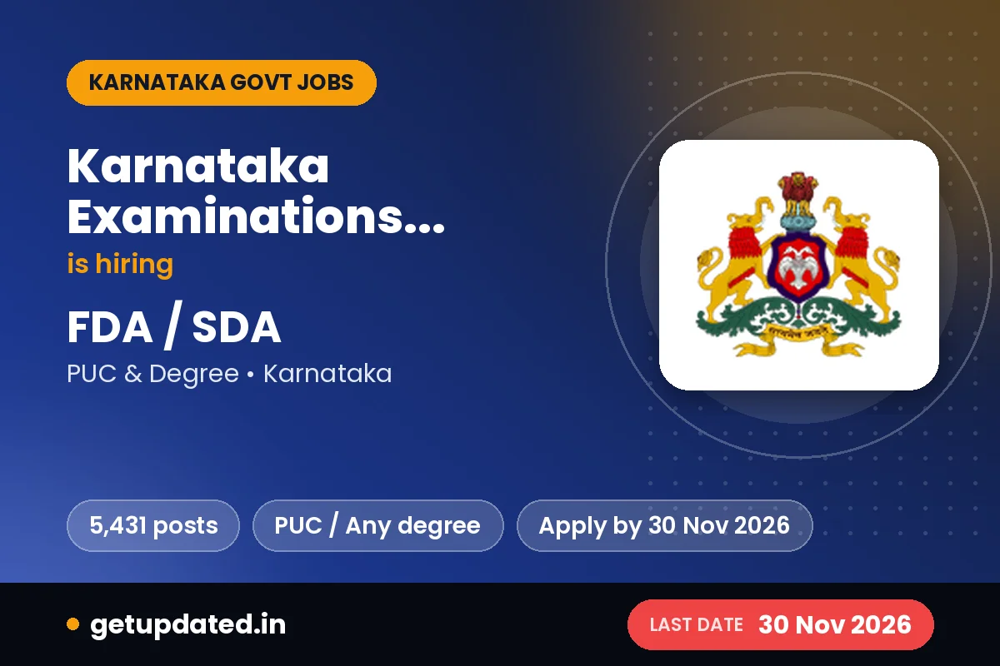

Isomorph AI is hiring a Software Engineering Intern in Bengaluru for a 6-month, full-time, hybrid internship that pays ₹40,000-60,000 per month. The role is listed at entry level, and applications go through LinkedIn Easy Apply on the company's own job posting.
This is not a "fetch coffee and fix typos" internship. The posting says interns ship real work on the platform alongside the founding team, with customers using new features within days. If you have built projects, contributed to open source, or won hackathons, this is the kind of role that rewards it.
The company also says strong interns get a full-time offer. That makes it a useful route into a small, fast-moving startup for freshers who already code well and want real ownership early.
Table of Contents
- Quick Highlights
- About Isomorph AI
- Role Overview
- What You Will Do
- Eligibility and Who Should Apply
- Stipend and Benefits
- Selection Process
- How to Apply
- Preparation Plan
- Likely Interview Topics
- Common Mistakes to Avoid
- Official Links and Final Checklist
- Final Takeaway
- Also Read
- FAQs
Quick Highlights
| Particular | Details |
|---|---|
| Company | Isomorph AI |
| Role | Software Engineering Intern |
| Location | Bengaluru, Karnataka (Hybrid) |
| Employment type | Internship, 6-month full-time |
| Start | Immediately |
| Stipend | ₹40,000-60,000 per month (paid internship) |
| Seniority | Entry level |
| Key skills | Agents, TypeScript, Python, cloud |
| Apply | LinkedIn Easy Apply |
| Last date | Not disclosed |
Apply early
The posting was shown as recently posted and no closing date is given. Startup internships with small teams can close as soon as the right candidates are found, so do not wait.
About Isomorph AI
Isomorph is building a platform for a problem that is growing quickly. People who know the work best, such as a finance analyst, an operations lead or a recruiter, can now build software themselves using AI agents. But what they build often lives only on a laptop. It may have no sign-in, expose sensitive data, have nobody to run it and be invisible to IT.
Isomorph aims to take that software the rest of the way. According to the posting, it makes the software secured, connected to company data, running in the company's own cloud and kept healthy, without the builder having to become an engineer.
The posting describes the team as a small, high-talent-density founding team from IIT Madras and IIT Delhi. It also says the founders are second-time founders who have built companies before and sold one. For a fresher, a team like this usually means direct access to the people making the product decisions.
Role Overview
As an engineering intern you work on the platform itself. You are not given a side project. Depending on your interests, you may work across one or more of these areas:
- Builder experience: the journey from "it works on my laptop" to "the whole company uses it", and how Isomorph guides each builder's own AI agent.
- Deployment and infrastructure: the path every app takes to production inside each customer's cloud, across languages, frameworks and databases.
- Platform capabilities: AI models, integrations with the tools companies run on, and agents that use a computer like a person does.
- Security: who can see and do what across every app and piece of company data, and keeping AI-built code safely contained.
- Finance agents and apps: agents that do real finance work, like reconciliations and reporting, where being right is everything.
You do not need to master all five. The posting says you pick what pulls you, so tell them in your application which area excites you and why.
What You Will Do
The responsibilities listed in the posting are quite specific:
- Own real features end to end, from design to production, with customers using them within days.
- Work with AI coding agents every day. The team builds Isomorph with agents itself, so your leverage is your judgment and taste, not your typing speed.
- Read and change code you did not write, fast, across a TypeScript and Python stack on the cloud.
- Debug things that break in production and make them not break again.
The point to notice is the second one. Isomorph does not want someone who avoids AI tools, and it does not want someone who accepts every suggestion blindly. It wants a person with opinions about when the tools help and when they do not.
Eligibility and Who Should Apply
The posting does not name a required degree, branch or passout batch. It is listed as entry level, so freshers can apply. What it does describe clearly is the kind of person who will do well:
- You have built and shipped things on your own: projects, open source, hackathons or startups. The posting says "Show us."
- You are a strong programmer who picks up new systems quickly.
- You live in AI coding tools and have opinions about when they help and when they do not.
- You care about the people using what you build and about getting the details right.
- Bonus: cloud and infrastructure, security, developer tools, or fintech experience.
Degree and batch not stated
Because the posting names no degree or batch, your proof of work matters more than your branch. A GitHub profile, deployed project or hackathon result will say more than a marks table here.
Stipend and Benefits
The posting states a stipend of ₹40,000-60,000 per month and notes that this is a paid internship. That is on the higher side for intern roles in India, which is a sign the company expects interns to contribute at a real engineering level.
The other benefit is the full-time offer for strong interns. The posting does not describe the offer terms, so treat it as an opportunity rather than a promise. Details on other benefits are not disclosed.
| Item | Details |
|---|---|
| Stipend | ₹40,000-60,000 per month |
| Duration | 6 months, full-time |
| Work mode | Hybrid, Bengaluru |
| After the internship | Full-time offer for strong interns |
Selection Process
The posting does not describe the selection steps, so we cannot confirm rounds or timelines. Based on what the role asks for, expect the company to look closely at your projects and code and to test how you work with real code.
A sensible way to prepare is to be ready for a conversation about things you have built, plus a practical coding or debugging exercise. Treat this as a guess to prepare for, not a confirmed process.
How to Apply
- Open the employer's LinkedIn posting from the Official Links section below.
- Log in to your LinkedIn account and check that your profile is complete and current.
- Click Easy Apply and fill in the form carefully.
- Attach a one-page resume that puts shipped projects, GitHub links and hackathons at the top.
- Where the form allows, add a short note on which area of the platform interests you most (for example security or finance agents) and what you have built that relates to it.
- Submit, then keep an eye on your LinkedIn messages and email for a reply.

Preparation Plan
You can use the days before and after applying to get ready.
- Refresh TypeScript and Python. The stack named in the posting is TypeScript and Python on the cloud. Be comfortable reading unfamiliar code in both.
- Prepare two or three projects to discuss. Know why you built them, what broke, and what you would change. Real debugging stories are valuable here.
- Practise with AI coding tools deliberately. Notice where they save time and where they produce wrong or unsafe code. Have specific examples ready.
- Learn cloud basics. Understand deploying a small app, environment variables, logs and databases.
- Understand basic security ideas. Authentication, permissions and keeping data private are central to this product.
- Read the posting again and use its language when you talk about the product.
Likely Interview Topics
Nothing about the interview is published, but the role description points to these areas:
- Walking through a project you shipped, including design decisions and trade-offs.
- Reading an unfamiliar piece of code and explaining what it does or where a bug could be.
- How you use AI coding agents, and when you decided not to trust their output.
- Basic cloud deployment concepts and how an app reaches production.
- Simple security reasoning, such as who should be allowed to see what.
- Attention to detail, especially in finance-style scenarios where the answer must be exactly right.
Common Mistakes to Avoid
- Applying with no proof of work. The posting says "Show us." A resume with only coursework will look weak.
- Claiming to be an expert in everything. Be honest about what you know well and what you are still learning.
- Ignoring the AI-tools angle. Saying you do not use AI tools, or that you use them for everything, both miss the point.
- A generic application. Mention the platform and an area you want to work on.
- Waiting too long. No closing date is given, so apply while the posting is fresh.
Official Links and Final Checklist
Before you apply, check:
- Your LinkedIn profile and resume are up to date.
- GitHub or project links work and have clear READMEs.
- You can explain two or three projects in simple language.
- You can start soon, since the internship starts immediately.
- You can work from Bengaluru in a hybrid setup.
Final Takeaway
A paid, 6-month internship with real ownership, a ₹40,000-60,000 stipend and a possible full-time offer, for freshers who can show what they have built.
If you have shipped projects, use AI coding tools well and want to work close to the founders of an early-stage company, this is worth your time. Apply through the official LinkedIn posting, put your best work first, and do it soon.
Also Read

KEA FDA SDA Recruitment 2026: Apply Online for 5,431 Posts (Last Date Extended to 30 November)
Read now →
Delta Technology Hub Hiring Associate Software Developer in Bengaluru (0-2 Years Experience)
Read now →
POWERGRID Trainee Engineer (Electronics) Recruitment 2026 via GATE 2026 EC: Eligibility, Salary and How to Apply
Read now →
PhonePe Hiring Platform Engineer 1 in Bengaluru 2026: Any Graduate, 0-2 Years Experience
Read now →Browse all latest jobs & updates →
FAQs
1. What is the stipend for the Isomorph AI Software Engineering Intern role?
The posting states a stipend of ₹40,000-60,000 per month. It is a paid internship.
2. How long is the internship?
It is a 6-month full-time internship that starts immediately.
3. Where is the job located?
The role is hybrid and based in Bengaluru, Karnataka.
4. How do I apply?
Apply through LinkedIn Easy Apply on the employer's LinkedIn job posting, linked in the Official Links section.
5. Is there a full-time offer after the internship?
The posting says strong interns get a full-time offer. It is not guaranteed for everyone.
6. Which skills are needed?
The listed skills are agents, TypeScript, Python and cloud. You should also be a strong programmer who uses AI coding tools daily.
7. Can freshers apply?
The role is listed at entry level. The posting does not name a degree or batch, but it expects you to have built and shipped projects on your own.
8. What is the last date to apply?
No last date is disclosed in the posting. It was listed as recently posted, so apply early.